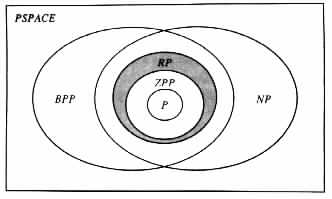

(n)
denote the expected time complexity of M1. Assume that (n) is some polynomial in
n.
(n)
denote the expected time complexity of M1. Assume that (n) is some polynomial in
n.
Probabilistic Time Complexity
Probabilistic Complexity Classes
Relationships between Probabilistic and Nonprobabilistic Complexity Classes
As in the case of deterministic and nondeterministic Turing transducers, each move of a probabilistic Turing transducer is assumed to take one unit of time. The time that a computation takes is assumed to be equal to the number of moves made during the computation. The space the computation takes is assumed to equal the number of locations visited in the auxiliary work tape, which has the maximal such number.
A probabilistic Turing transducer M is said to be T(n) time-bounded , or of time complexity T(n), if M halts within T(n) time in each computation on each input of length n. If T(n) is a polynomial, then M is also said to be polynomially time-bounded, or to have polynomial time complexity.
M is said to be T(n) expected time-bounded, or of expected time complexity T(n), if for each input x of M the function T(n) satisfies
If T(n) is a polynomial, then M is said to be polynomially expected time-bounded, or of polynomially expected time complexity.
Arguments similar to those given for Church's Thesis in Section 4.1, and for the sequential computation thesis in Section 5.1, also apply for the following thesis.
The Probabilistic Computation Thesis A function that is computable mechanically with the aid of probabilistic choices can also be computed by a probabilistic Turing transducer of polynomially related time complexity and polynomially related, expected time complexity.
Probabilistic Complexity Classes
The tractability of problems with respect to probabilistic time is determined by the existence of bounded-error probabilistic Turing transducers of polynomial time complexity for solving the problems. In light of this observation, the following classes of language recognition problems are of interest here.
{ L | L is a language accepted by a bounded-error probabilistic Turing machine of polynomial time complexity }.
{ L | L is a language accepted by a polynomially time-bounded, probabilistic Turing machine M, which satisfies the following two conditions for some constant e < 1.
{ L | L is a language accepted by a probabilistic Turing machine, which has zero error probability and polynomially expected time complexity. }
Relationships between Probabilistic and Nonprobabilistic
Complexity Classes
The relationship between the different classes of problems, as well as their relationship to the classes studied in Chapter 5, is illustrated in Figure 6.4.1.
|

|
Theorem 6.4.1 BPP is included in PSPACE.
Proof Consider any problem K in BPP. Let L denote the language that K induces. By the definition of BPP there exists a bounded-error, polynomially time-bounded, probabilistic Turing machine M1 that accepts L. Let e < 1/2 be a constant that bounds the error probability of M1, and let p(n) be the time complexity of M1.
With no loss of generality it is assumed that M1 has a constant k, such that in each probabilistic move, M1 has exactly k options. (Any probabilistic Turing machine can be modified to have such a property, with k being the least common multiple of the number of options in the different moves of the Turing machine.) In addition, it is assumed that M1 has some polynomial q(n), such that in each computation on each input x it makes exactly q(|x|) probabilistic moves. Consequently, M1 on each input x has exactly kq(|x|) possible computations, with each computation having an equal probability of occurring.
From M1, a deterministic Turing machine M2 can be constructed to accept the language L. M2 relies on the following two properties of M1.
Given an input x, the Turing machine M2 starts its computation by computing p(|x|). Then one at a time, M2 lists all the sequences of transition rules of M1 whose lengths are at most p(|x|). For each such sequence, M2 checks whether the sequence corresponds to a computation of M1. M2 determines whether each computation of M1 is accepting or rejecting. In addition, M2 counts the number ma of accepting computations, and the number mr of nonaccepting computations.
M2 accepts the input x if it determines that the probability ma/(ma + mr) of M1 accepting x is greater than 1/2, that is, if ma > mr. M2 rejects x if it determines that the probability mr/(ma + mr) of M1 rejecting x is greater than 1/2, that is, if mr > ma.
The nonprimality problem is an example of a problem in the class RP (see Example 6.2.1). For RP the following result holds.
Theorem 6.4.2 RP is in BPP Ç NP.
Proof Consider any problem K in RP. Let L be the language that K induces. By the definition of RP, it follows that there exist a constant e < 1, and a polynomially time-bounded Turing machine M1, that satisfy the following conditions.
M1 can also be simulated by a bounded-error probabilistic Turing machine M3 of similar time complexity. Specifically, let k be any constant such that ek < 1/2. Then M3 simulates k computations of M1 on a given input x. M3 accepts x if M1 accepts x in any of the simulated computations. Otherwise, M3 rejects x. It follows that RP is also in BPP.
Finally, for ZPP the following result is shown.
Theorem 6.4.3 ZPP is contained in RP.
Proof
Consider any probabilistic Turing machine M1 that has 0 error probability. Let (n)
denote the expected time complexity of M1. Assume that (n) is some polynomial in
n.
From M1, a probabilistic Turing machine M2 of the following form can be
constructed. Given an input x, the probabilistic Turing machine M2 starts its
computation by evaluating  (|x|). Then M2 simulates c
(|x|). Then M2 simulates c (|x|) moves of M1 on
input x for some constant c > 1. M2 halts in an accepting state if during the
simulation it reaches an accepting state of M1. Otherwise, M2 halts in a nonaccepting
state.
(|x|) moves of M1 on
input x for some constant c > 1. M2 halts in an accepting state if during the
simulation it reaches an accepting state of M1. Otherwise, M2 halts in a nonaccepting
state.
By construction M2 has no accepting computation on input x if x is not in L(M1). On
the other hand, if x is in L(M1), then M2 halts in a nonaccepting state, with probability
equal to that of M1 having an accepting computation that requires more than c (|x|)
moves. That is, the error probability e(x) is equal to å
i=c(|x|)+1¥pi, where pi
denotes the probability that, on x, M1 will have a computation that takes exactly i
steps.
(|x|)
moves. That is, the error probability e(x) is equal to å
i=c(|x|)+1¥pi, where pi
denotes the probability that, on x, M1 will have a computation that takes exactly i
steps.
Now
| (|x|) | ³ | (x) | ||
| = | p0 · 0 + p1 · 1 + · · · + pc (|x|) · c(|x|) + · · · (|x|) · c(|x|) + · · · | |||
| ³ | p0 · 0 + p1 · 1 + · · · + pc (|x|) · c (|x|) · c (|x|) + ·å
i=c (|x|) + ·å
i=c (|x|)+1¥p
i (|x|)+1¥p
i | |||
| = | p0 · 0 + p1 · 1 + · · · + pc (|x|) · c (|x|) · c (|x|) + (c (|x|) + (c (|x|) + 1)e(x) (|x|) + 1)e(x) | |||
| = | e(x) + · · · |
| 1 - e(x) | ³ | 1 - | ||
| ³ | 1 - 1/c |